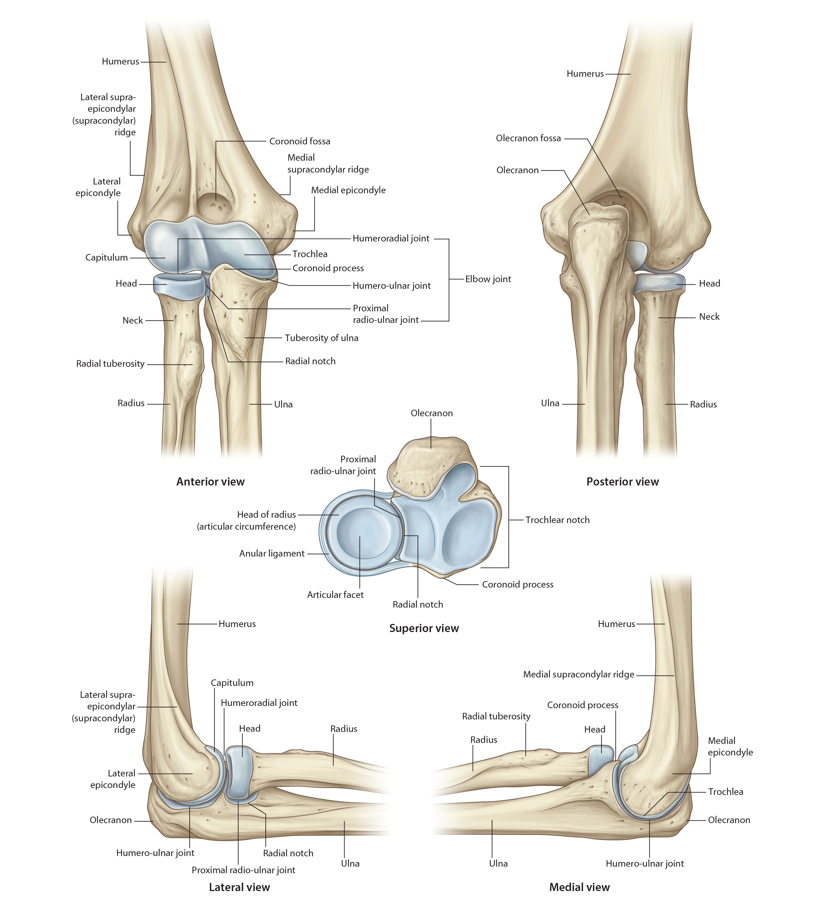

Lab3 - Module 2 - Anatomy of the Arm and Forearm: Page 3 of 11
The Elbow Joint
|  |
| Tap on image to enlarge |
| Rotate to view the Humeroradial articulation. The articulation between the capitulum of the humerus and the head of the radius. |
|
• Allows flexion and extension. The humeroradial joint is considered a hinge joint. • Anatomically is a ball-and-socket joint. • The radial head butts up against the capitellum. • The capitellum acts as a buttress for lateral compression. • Absorbs lateral compression and other rotational forces during throwing or other rapid forearm movements |
| Rotate to view the Humeroulnar articulation. The articulation between the trochlea of the humerus and trochlear notch of the ulna. |
|
• Allows flexion and extension of the elbow joint. It is considered a hinge joint. • The trochlear notch offers good structural stability. • The trochlea is asymmetrical in shape. • In the extended position, this asymmetry creates an angulation of the ulna laterally, resulting in a valgus position. This angulation is termed the carrying angle. 10-15° in males and 15-20° in females. |
| Rotate to view the Proximal Radioulnar articulation. The articulation between the head of the radius and the radial notch of the ulna. |
|
• Pivot Joint that allows pronation and supination of the forearm. |